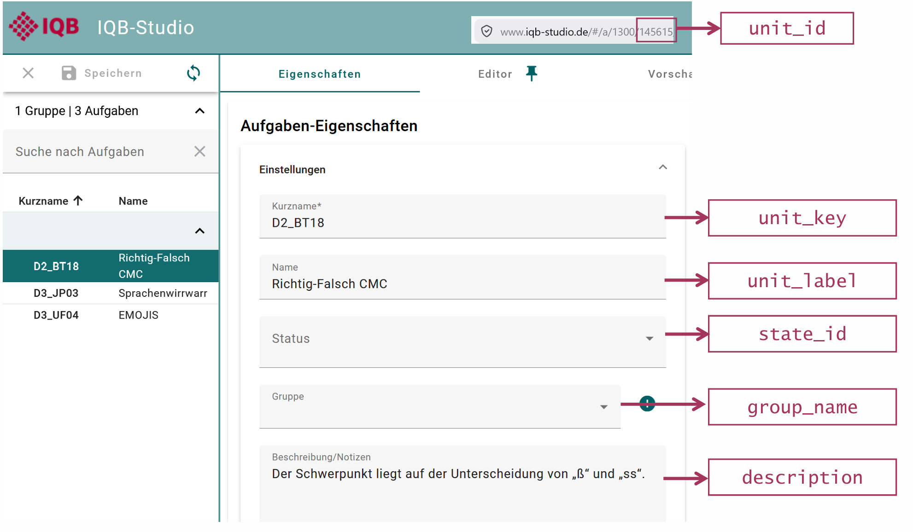
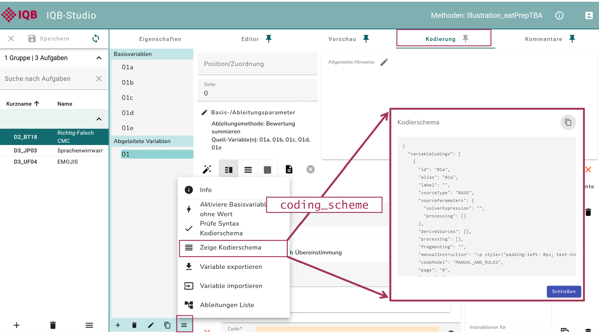
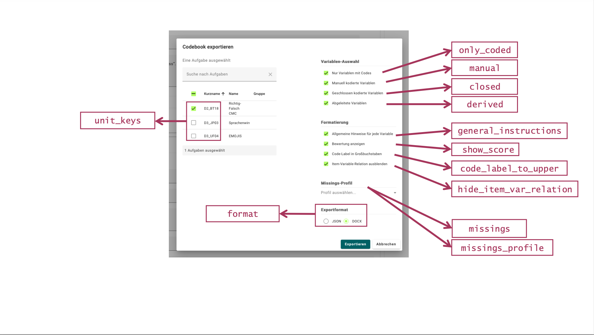
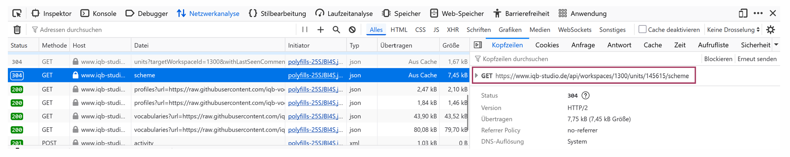

Nachschlagen und vertiefen
Funktionen entlang des Workflows
| Arbeitsschritt | Funktionen |
|---|---|
| Verbindung und Workspace | login_studio(), login_testcenter(), access_workspace() |
| Aufgabeninformationen | get_units(), add_coding_scheme() |
| Antworten und Design | get_responses(), read_responses(), get_design() |
| Antworten und gespeicherte Kodierungen entpacken | prepare_responses(), prepare_coded() |
| Kodierung | code_responses() |
| Codebuch und Kodiermanual aus IQB-Studio | prepare_codebook(), download_codebook() |
| Lokaler Excel-Export | writexl::write_xlsx() |
| Missings | complete_design() |
| Missing-Überblick | summarise_missings() |
| Item-Verknüpfung | add_item_id() |
| Psychometrische Kennwerte | evaluate_psychometrics() |
| Log-Import und Überblick | get_logs(), read_logs(), summarise_log_inventory() |
| Log-Verlässlichkeit | detect_log_anomalies(), summarise_log_qc() |
| Bearbeitungs- und Ladezeiten | estimate_unit_times() |
| Fokusverluste | summarise_log_focus() |
Wiederverwendbare R-Skripte
| Datei | Inhalt |
|---|---|
| 00_installation.R | Installation, Paketversionen und Beispieldateien |
| 01_datenabruf.R | Daten über eigene IQB-Studio-/Testcenter-Zugänge beziehen |
| 02_daten_verstehen.R | JSON, Partial Credit und gespeicherte Codes |
| 03_datenaufbereitung.R | Vollständige Aufbereitung bis zum Datensatzexport |
| 04_logs.R | Überblick, Zeiten und Fokusverluste |
| 05_kodiermanuale.R | Lokales Codebuch als Excel und CSV |
| 06_kodiermanuale_studio.R | Codebuch und Kodiermanual aus dem eigenen IQB-Studio |
Die lokalen Skripte verwenden die Daten aus dem Materialpaket. 00_installation.R wird abschnittsweise ausgeführt; der Installationsblock ist nur bei Bedarf erforderlich. Die erste Kodierung und ihre Prüfung gehören zum Rechenbeispiel in Skript 02. eatAutoCode wird über library(eatPrepTBA) intern geladen und nicht separat mit library() eingebunden.
Die beiden Zugangsvorlagen enthalten Beispielangaben und werden für eigene Realdaten angepasst. Sie werden im lokalen Workshop und beim Rendern nicht ausgeführt.
Eigene Zugänge und Fehlermeldungen
login_studio() verwendet ohne base_url die Adresse https://www.iqb-studio.de/. Für eine andere Installation wird base_url ergänzt. app_version muss zur Anmeldeseite passen, einschließlich eines möglichen Beta-Zusatzes. 21.0.0, Workspace 1300 sowie Testcenter-Workspace 35 unter https://iqb-testcenter2.de/ sind Beispielangaben.
keyring = TRUE verwendet den Passwortspeicher des Betriebssystems. keyring = FALSE ermöglicht eine frische Eingabe; change_key = TRUE ersetzt zusammen mit keyring = TRUE die gespeicherten Zugangsdaten.
| Meldung oder Situation | Nächster Schritt |
|---|---|
| HTTP 401 Unauthorized | Adresse und Zugangsdaten prüfen; mit keyring = FALSE neu eingeben. Falsch gespeicherte Daten bei Bedarf mit change_key = TRUE ersetzen. |
| HTTP 521 | app_version mit der vollständigen Versionsangabe auf der IQB-Studio-Anmeldeseite abgleichen. |
| IQB-Studio wurde aktualisiert | Neu anmelden und das Workspace-Objekt erneut erstellen. |
get_design() berücksichtigt standardmäßig Testpersonen-Logins mit mode = "run-hot-return". Bei einem anderen Testdurchführungsmodus wird mode ausdrücklich angegeben. Dieser Filter betrifft das Testdesign und ist kein Anmeldemodus für den Zugang zu Testcenter.
Tabelle, Codebuch und Kodiermanual
Die lokale Lehrtabelle in data/codebook.csv stammt aus den synthetischen Kodierschemata und enthält eine eigene numerische code_score-Spalte. R/05_kodiermanuale.R wählt die gewünschten Units aus und schreibt die Tabelle als Excel und CSV.
Mit einem eigenen IQB-Studio-Zugang liefert prepare_codebook() eine aufbereitete Tabelle; download_codebook() speichert beispielsweise das originale DOCX-Kodiermanual. Die Tabellenstruktur des IQB-Studio-Exports kann von der Lehrtabelle abweichen. Optionen wie show_score = TRUE und missings_profile steuern den Inhalt des Exports. Für eigene Aufgaben die Auswahl und die enthaltenen Kodieranweisungen prüfen.
Screenshots zum Nachsehen
Die Abbildungen stammen aus den eatPrepTBA-Vignetten am Commit 232350e. Einige zeigen frühere IQB-Studio-Versionen; sie illustrieren die Verbindung zwischen Oberfläche und R-Begriffen. Sie sind keine Screenshots der synthetischen Studie.
Workspace

Unit und Kennungen

Kodierschema

Codebook

API-Anfrage

Leitfaden für eine Live-Demo
IQB-Studio: Workspace auswählen; eine Unit öffnen; Kurzname, Variable und Item-Verknüpfung zeigen. Auf unit_key und variable_id in R zurückverweisen.
Testcenter: In einem vorbereiteten Demo-Workspace Testpersonen-Datei und Booklet ansehen; die Reihenfolge zeigen; Ergebnisexport und Responses-/Logs-Dateien wiedererkennen. Ein aktueller Testcenter-Screenshot kann später ergänzt werden.
API: Netzwerkansicht öffnen; eine GET-Anfrage auswählen; Ressource und JSON-Antwort zeigen. Anschließend den entsprechenden Funktionsaufruf in der R-Vorlage ansehen.
Sonderfall: Daten ohne Kodierschema
prepare_responses(responses) entpackt Rohantworten zur eigenen Weiterverarbeitung. prepare_coded(responses) entpackt bereits gespeicherte Kodierungen und vergibt keine neuen Codes oder Scores. Beide Wege zeigt 02_daten_verstehen.R an synthetischen Dateien. Die gespeicherten Codes dienen auch als Beispiel für einen Importweg, der bei StarS-Daten relevant ist; es sind keine echten StarS-Exports.
Diese Ergebnisse sind kein direkter Ersatz für den vollständigen Workflow mit Units, Kodierschemata und Design. Insbesondere bei StarS- oder projektspezifischen Exporten Herkunft und Bedeutung der Variablen prüfen. Itemzuordnung und Missing-Regeln müssen gesondert ergänzt werden.
Weitere Paketfunktionen zur Studienvorbereitung
generate_testtakers(), generate_booklet(), generate_booklets(), prepare_booklets_from_block_design() und upload_file() unterstützen die Studienvorbereitung. Sie gehören zum weiteren Funktionsumfang des Pakets. Für ihre praktische Anwendung wird ein eigener Testworkspace benötigt.
Quellen
- eatPrepTBA: Standardworkflow
- eatPrepTBA: IQB-Studio-Einführung
- eatPrepTBA: APIs
- eatPrepTBA: Codebooks
- eatPrepTBA: Log-Daten
- eatPrep-Workshop 2024 von Karoline Sachse
- Quarto: Reveal.js
Materialstand 24.10.2026: eatPrepTBA 0.9.8.9042 / ea782df, eatAutoCode 0.5.0.9008 / 54f39a8 und IQB-Autocoder 5.5.0. renv.lock enthält die genaue Paketumgebung; die durchgeführten Prüfungen stehen in VALIDATION.md. Die öffentlich gerenderte Paketdokumentation kann zeitlich davon abweichen. Gestaltung: bereitgestellter IQB-Styleguide vom 12.01.2026, IQB-Präsentationsvorlage, originales Paketlogo und Codegestaltung nach dem eatPrep-Workshop 2024.